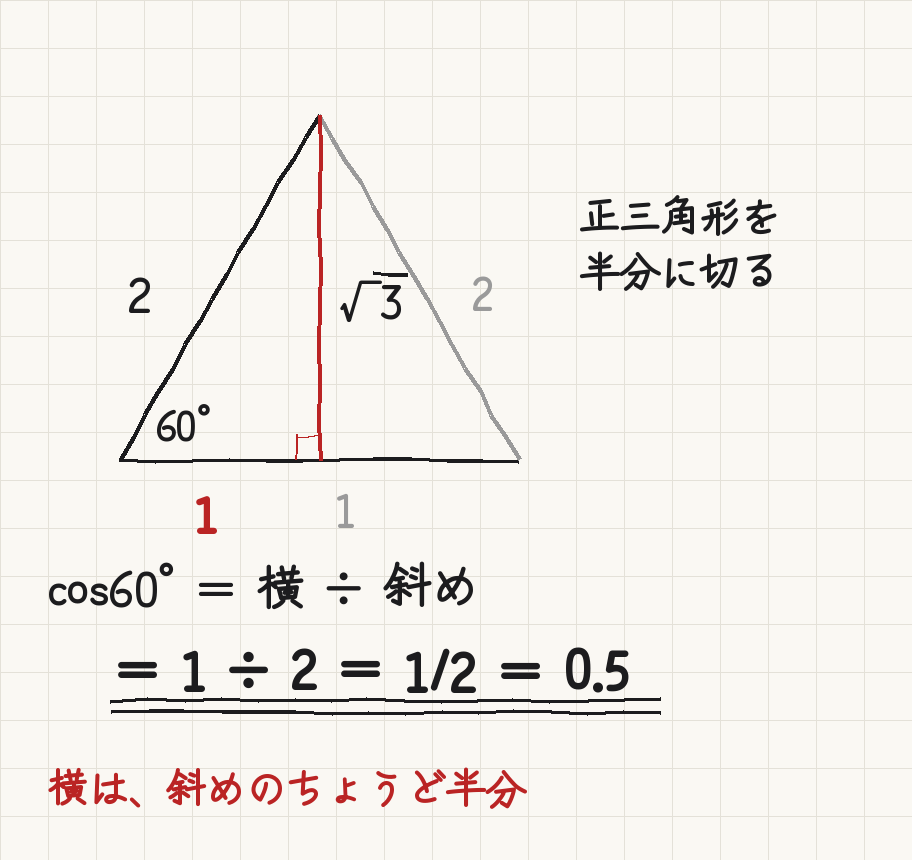

cos60° の値は 1/2（0.5）：なぜ半分になるのか
cos60° の値は、分数で 1/2（2分の1）、小数で 0.5 です。cos は直角三角形の「横の辺 ÷ 斜めの辺」で、角度が 60° のとき、横の辺は斜めの辺のちょうど半分になります。
30°・45°・60° の sin と cos の値（分数と小数）
| 角度 | cos（分数と小数） | sin（分数と小数） |
|---|---|---|
| 30° | √3/2（約 0.87） | 1/2（0.5） |
| 45° | 1/√2（約 0.71） | 1/√2（約 0.71） |
| 60° | 1/2（0.5） | √3/2（約 0.87） |
1/√2 は、√2/2 とも書きます。
位相や力率の解説には、cos 60° のような書き方が出てきます。角度から数が出てくる仕組みが分からないまま、値だけを覚えようとして手が止まります。
cos60° の値：分数では 1/2、小数では 0.5
1/2 と 0.5 は、同じ値の書き方の違いです。分数で書くか小数で書くかは、問題の選択肢に合わせます。
取り違えやすい相手は sin60° です。sin60° は √3/2（約 0.87）で、cos60° より大きくなります。
どこで止まるか
なぜ 1/2 になるか：正三角形を半分に切る
直角三角形は、もう1つの角度を決めると、形が決まります。大きさが変わっても、辺どうしの割合は変わりません。その割合に名前を付けた物が、sin と cos です。
斜めの辺を 1 とすると、横の辺の長さが cos、縦の辺の長さが sin です。
60° の直角三角形は、正三角形を半分に切ると作れます。正三角形の3つの角は、どれも 60° です。
② 上の頂点から、底の辺へ垂直に線を下ろす。底の辺は 1 と 1 に分かれる
③ 左半分は、60° の角を持つ直角三角形。斜めの辺 2、横の辺 1
④ 縦の辺は、三平方の定理で 2 × 2 − 1 × 1 ＝ 3 なので √3
⑤ cos60° ＝ 横 ÷ 斜め ＝ 1 ÷ 2 ＝ 1/2 ＝ 0.5
⑥ sin60° ＝ 縦 ÷ 斜め ＝ √3 ÷ 2 ≒ 0.87

覚える値は、3つの角度だけ
上の表のとおり、30° と 60° は、cos と sin が入れ替わるだけです。45° は、横と縦が同じ長さです。出てくる数は、0.5、約 0.71、約 0.87 の3つしかありません。
迷ったら、角度が小さいときは横に長い三角形、と思い出します。0° に近いほど cos は 1 に近く、90° に近いほど 0 に近くなります。
どこで使うか
交流では、電圧と電流の波のずれを角度で表します。力率は、その角度の cos です。ずれが 60° なら、力率は 0.5 です。力率から電力を出す流れは、力率と無効電力の求め方（電験三種）で扱っています。
数値で確かめる
cos 60° ＝ 0.5（横は、斜めの半分）
sin 60° ＝ 約 0.87
確かめ：0.5 × 0.5 ＋ 0.87 × 0.87 ＝ 0.25 ＋ 0.76 ＝ 約 1
sin・cos の値のまとめ
45°：sin ＝ cos ≒ 0.707
60°：sin ≒ 0.866 cos ＝ 0.5
tan ＝ sin ÷ cos
0.866 は 2分の√3、0.707 は √2 分の1です。sin と cos は、30° と 60° で値が入れ替わります。
別の呼び方：sin は正弦（サイン）、cos は余弦（コサイン）、tan は正接（タンジェント）です。力率 cos θ の cos も、同じ物です。
電圧と電流の波のずれが 30° のとき、力率（cos 30°）は、およそいくつですか。
答え
約 0.87。30° は横に長い三角形なので、cos（横）は大きいほうの値です。sin 30° が 0.5 です。最終更新：2026年11月20日